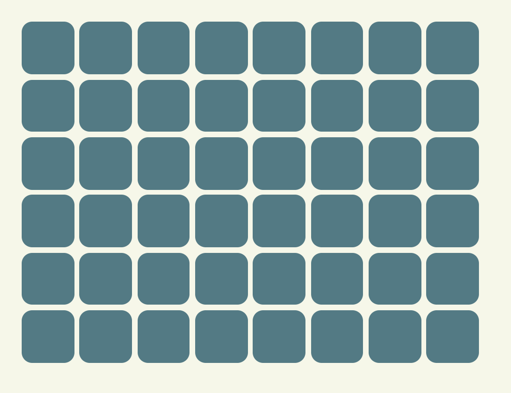
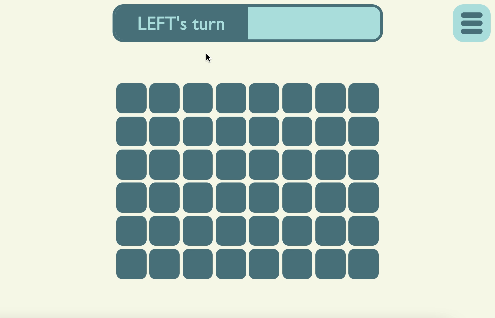
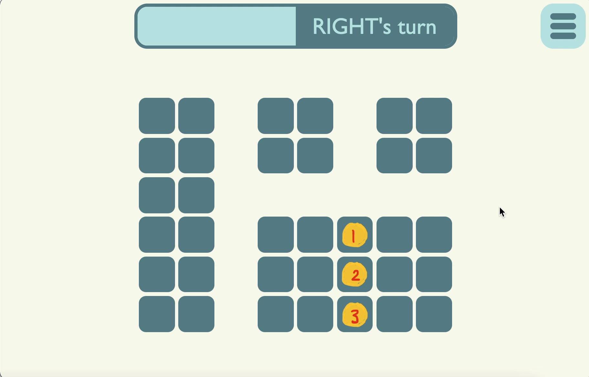
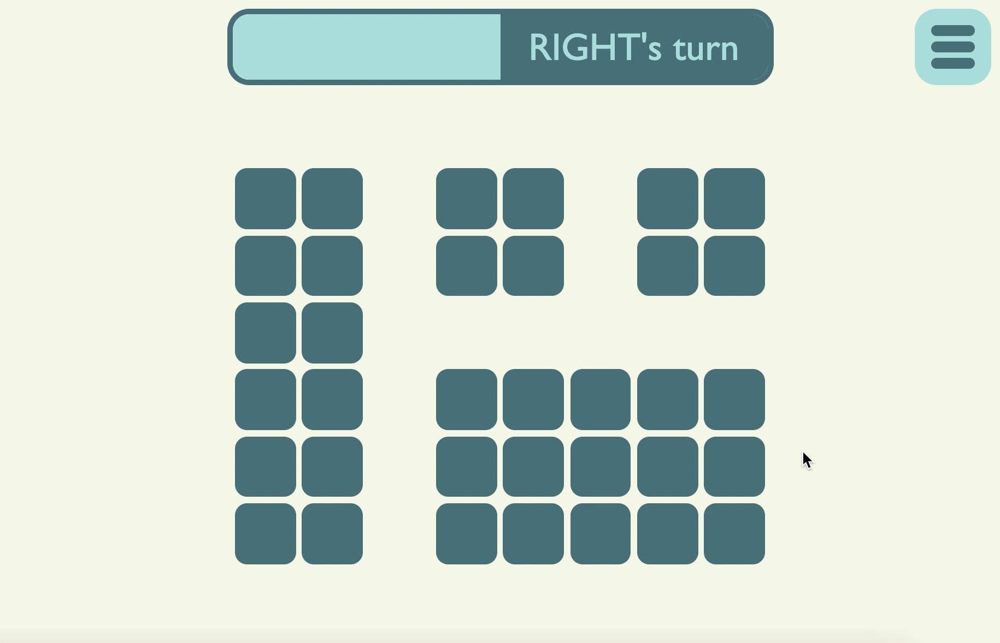
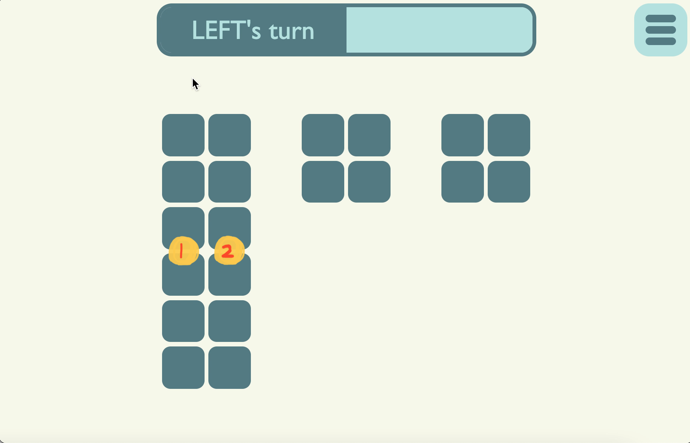

Bynum’s game starts with a grid:
Before the start of the grid, you can choose the dimension (height x width) of the grid (we will be using an example with a 6 x 8 grid)

When the game start, player LEFT will make the first move. By clicking on any cell in the grid, player LEFT remove one column containing that cell:
Then the game board is splited into part A and part B

Now is player RIGHT's turn, player RIGHT can choose to play in either part A or part B. For example, if player RIGHT chooses part B, by clicking on an cell of part B, player RIGHT removes a row of part B (see below demo). If player RIGHT chooses part A, he will remove a row of part A (This is not included in the demo)

Then the game board is splited into part A, B' and C

Now is player LEFT's turn, player LEFT can again choose to play in one of the three parts. For example, if player LEFT choose to play in part B', by clicking on an cell of part B', player LEFT removes a column of part B'

The game then go on like this, and eventually, the grid will be removed completely. The player that made the last removal will be the winner.
However, there is an additional rule:
After one removal, if there are some columns or rows isolated (with no neighbor columns or rows), those isolated columns or rows will be removed automatically.
- Isolated row:
Row 1 and row 3 will become isolated after row 2 is removed
- Isolated column:
Column 1 will become isolated after column 2 is removed

(This option can be undone in top right corner of the game board.)